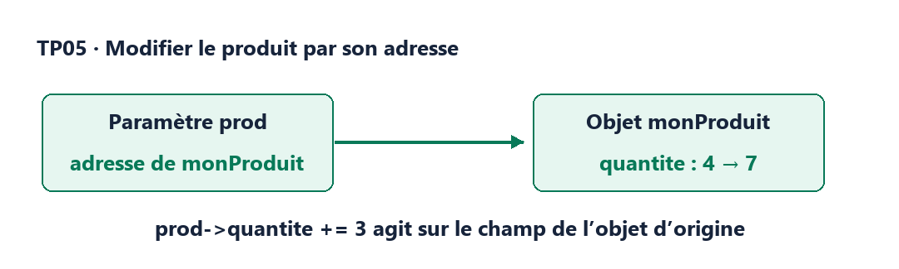

Comprendre le cours
1. Compiler un programme et typer les données
Un programme C est constitué de fonctions. L’exécution commence dans main. Le compilateur transforme le code source, vérifie notamment la syntaxe et les types et produit les éléments qui seront assemblés en exécutable. Une erreur de calcul peut subsister après compilation. Commence par lire les avertissements et exécuter un petit cas dont tu connais le résultat.
Choisis un type selon la valeur à représenter. int représente un entier, double un nombre à virgule et char une petite valeur entière utilisée notamment pour les caractères. Avec des entiers, 5/2 donne 2. Avec 5.0/2, le calcul se fait en virgule flottante et donne 2,5.
printf affiche des valeurs dont le format correspond aux arguments. scanf peut écrire dans des variables si tu lui transmets leurs adresses. Vérifie combien de conversions ont réussi avant d’utiliser la saisie. Par exemple, scanf("%d", &n) == 1 confirme la lecture d’un entier.
2. Décomposer avec des fonctions et des boucles
Un prototype annonce le type du résultat et les types des paramètres. Une fonction reçoit les arguments par valeur. Modifier une copie d’un entier ne modifie pas l’original. Si le paramètre est un pointeur, la fonction reçoit une copie de l’adresse et peut agir sur l’objet qu’elle désigne.
Un if choisit une branche. Une boucle for convient pour des indices connus. Un tableau de n éléments utilise les indices 0 à n−1. Transmets la taille avec le tableau. Dans beaucoup d’expressions, le nom du tableau est converti en pointeur vers son premier élément. Dans la fonction appelée, ce pointeur ne contient pas le nombre d’éléments.
3. Lire et comparer des chaînes
Une chaîne C est une suite de caractères terminée par '\0'. Il faut réserver une case pour ce caractère. Pour la chaîne "chat", il en faut au moins 5. strlen compte les 4 caractères qui précèdent le terminateur. L’absence de terminateur fait sortir toute fonction de lecture de chaîne de son usage normal.
strcmp(a,b) indique l’ordre lexicographique par le signe de son résultat. Zéro signifie que les textes sont égaux. a == b compare les pointeurs dans ce contexte. Pour saisir une chaîne, borne la longueur d’entrée et vérifie la capacité. Avec fgets, regarde aussi si le saut de ligne a été conservé.
4. Relier structures, pointeurs et mémoire
Une structure regroupe plusieurs champs sous un même type. Accède par objet.champ si tu tiens l’objet, par p->champ si tu tiens un pointeur. &objet donne une adresse et *p désigne l’objet pointé. Avant de déréférencer un pointeur, il faut qu’il pointe vers un objet valide.

malloc réserve des octets et renvoie une adresse ou NULL. Pour n entiers, calcule la taille avec n * sizeof *tableau après avoir validé la valeur de n et la multiplication. Initialise les cases avant de les lire. Libère la mémoire avec free quand elle n’est plus utilisée.
5. Parcourir puis modifier une liste chaînée
Un maillon contient une valeur et un pointeur vers le suivant. Le pointeur de tête permet de retrouver le premier. Dans une liste simple, le dernier maillon pointe vers NULL. Pour insérer en tête, affecte l’ancienne tête au champ suivant du nouveau maillon, puis déplace la tête.
Pour libérer une liste, mémorise le suivant avant de libérer le maillon courant. En liste circulaire, la fin se repère par le retour au point de départ. En liste doublement chaînée, mets aussi à jour le lien précédent du voisin. Une modification doit préserver tous les liens qui seront utilisés par le prochain parcours.
Du cours aux TD et TP
Les éléments des TP ont été reconstitués à partir des corrigés retrouvés. Les supports de cours originaux sont dans le téléchargement.
Questions TD & TP
TP04, ex. 5 · Choisir le premier couple nom-prénom
Énoncé reconstitué. Comparer deux personnes par leur nom. Si les noms sont identiques, départager avec les prénoms.
- Appelle
strcmp(nom1, nom2). Si le résultat est négatif, sélectionne la première personne. S’il est positif, sélectionne la seconde. - En cas d’égalité, appelle
strcmp(prenom1, prenom2). AvecDurand, AliceetDurand, Zoé, le nom ne départage pas et Alice arrive d’abord. - Pour construire l’affichage, écris dans un tampon dimensionné, par exemple avec
snprintf. Vérifie la valeur renvoyée pour détecter une ligne tronquée.
TP05, ex. 2 · Remplir un tableau de taille donnée
Énoncé reconstitué. Lire la taille et une valeur initiale, allouer un tableau et l’initialiser avec la valeur de départ puis les valeurs espacées de 2.
- Vérifie que la saisie fournit une taille positive raisonnable. Vérifie que le produit de la taille par
sizeof *tableautient danssize_t. Aprèsmalloc, traite un éventuelNULL. - Pour une taille de 4 et un départ à 3, remplis les indices 0, 1, 2 et 3 avec
3, 5, 7, 9. Garde la taille pour contrôler le parcours. Avec une plage plus large, vérifie que les valeurs calculées tiennent aussi dansint. - Affiche chaque valeur une fois, puis libère le tableau. Teste une seule case, plusieurs cases et une saisie invalide.
TP05, ex. 3 · Modifier la quantité en place
Énoncé reconstitué. Définir un produit par sa référence et sa quantité, puis ajouter une quantité à un produit existant.
struct produit {
int reference;
int quantite;
};
void ajoute(struct produit *prod, int qte) {
prod->quantite += qte;
}Déclare struct produit stock = {42, 4};. Appelle ajoute(&stock, 3). Relis la structure après l’appel. La référence est toujours 42 et la quantité vaut 7. La fonction suppose une adresse valide et une addition qui tient dans un entier.
TD06 · Ajouter en tête et vérifier le parcours
Démarche issue du corrigé. Construire la liste vide, ajouter des valeurs et afficher les maillons dans l’ordre où ils sont parcourus.
- Sur une liste vide, la tête vaut
NULL. Crée un maillon de valeur 4. Son suivant prend la tête actuelle, puis la tête devient ce maillon. - Insère ensuite 7 de la même manière. Le parcours lit
7 → 4 → NULL. Vérifie que les deux valeurs restent joignables depuis la tête. - Au moment de détruire la liste, garde l’adresse du suivant, libère le maillon puis avance. Remets la tête à
NULLsi elle reste accessible.